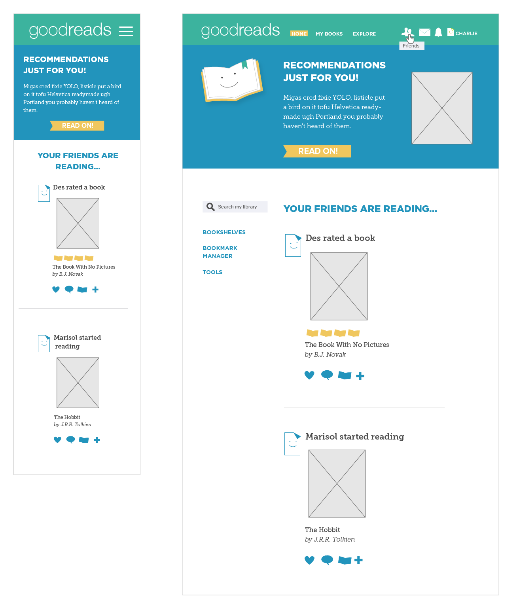

Project Brief
This project was a redesign for the GoodReads web app. I designed three pages for this app with pixel perfect precision in Illustrator. I began this project with research, interviewing different users and doing competitor and a S.W.O.T analysis to decide what content was being used the most and how to focus my design. My goal was to design a site that reflected the core values of Goodreads. Fun, engaging and light hearted.
Tools Used
Illustrator
Process
After researching and interviewing, I created word lists, style tiles, wireframes, and low fidelity comps.
